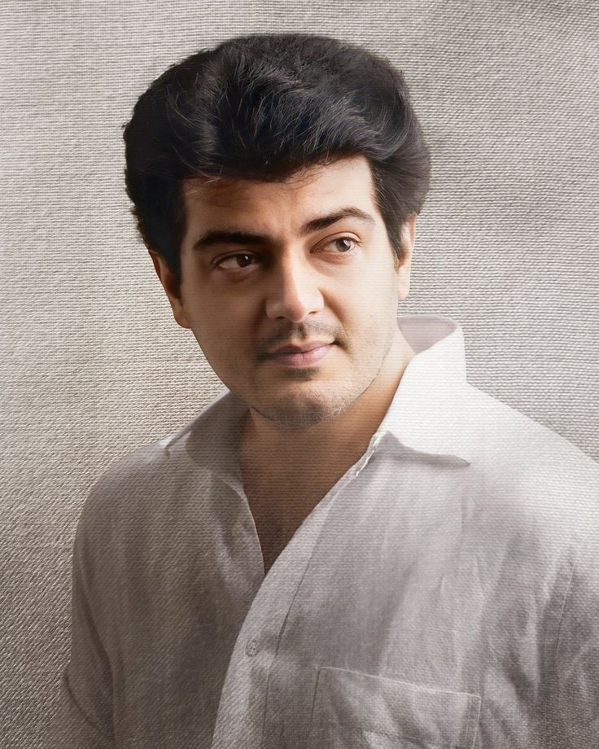
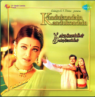
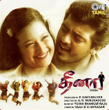
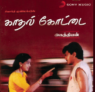
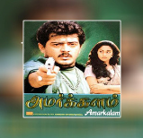

AJITH SONGS
|  | Ajith Kumar known as "Thala," is a celebrated Tamil actor born on May 1, 1971. Initially a motor racing enthusiast,he transitioned to acting with his debut in 1992. Ajith gained fame with Aasai (1995) and is renowned for roles in films like Mankatha and Viswasam. Admired for his versatility and humility, Ajith has a massive fan base.Ajith is also a skilled racer and philanthropist, earning a massive fan following over his career. |
|  | Enna Solla Pogirai |
|  | Vathikuchi Pathikadhu Da |
 |
April Madhathil |
|  | Nalam Nalamariya |
|  | Unnodu Vaazhatha |
| Enna Solla Pogirai | |
| Vathikuchi Pathikadhu Da | |
|
April Madhathil |
| Nalam Nalamariya | |
| Unnodu Vaazhatha | |